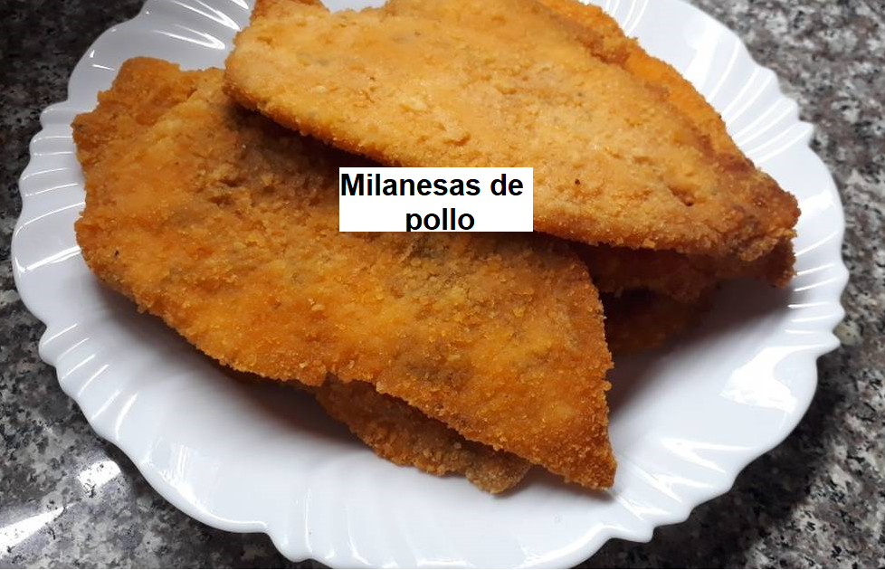

Milanesas de pollo
La milanesa consiste en empanar filetes de corte fino que generalmente suelen ser filetes de vaca aunque puedes hacerlos con filetes de cerdo, filetes de pollo filete de ternera, en definitiva que para realizar una milanesa puedes utilizar la carne que más te guste ya que la milanesa consiste en pasar por huevo y pan un ingrediente. Te dejo la receta en video para que la veas.

Ingredientes
- Pechuga de pollo 4 unidades
- Huevos 2 unidades
- Leche ½ taza
- Ajo Triturado Deshidratado ½ cdita.
- Perejil Deshidratado 1 cda.
- Sal 1 pizca
- Pimienta Negra Molida ¼ cdita.
- Pan rallado 1 taza
- Aceite para freir 2 lts
- Limón 1 unidad
Con ayuda de un cuchillo, abrí las pechugas como si fueran un libro.
Batí ligeramente los huevos con la leche y condimentá con sal, Pimienta Negra Molida, Ajo Triturado y Perejil Deshidratado Alicante, colocá en esta mezcla las pechugas y dejalas ahí por unos 5 minutos.
Pasado ese tiempo, pasalas por pan rallado, presionalas bien contra el pan para que quede bien impregnado. Pasalas una vez más por la mezcla de huevo y nuevamente por pan rallado.
Freí las milanesas en abundante aceite por unos 10 minutos aprox. (debe estar bien caliente). Al retirarlas colocalas sobre papel absorvente para retirar el exceso de aceite.
Servilas acompañadas de rodajas de limón.